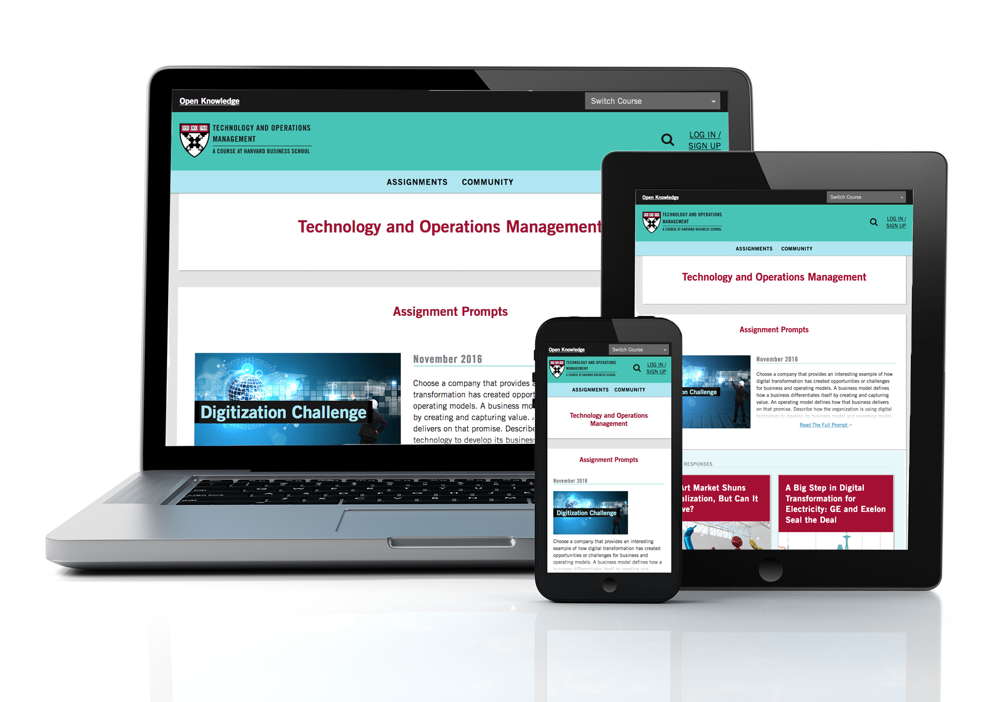

<!--include partials/hero--><!-- Later when bug fixed, add hero as block/extend--><!DOCTYPE html><html><head><title>Adrienne Debigare Portfolio – Open Knowledge</title><!-- to do – add the rest of the HEAD attributes--><link rel="stylesheet" href="https://use.fontawesome.com/releases/v5.6.3/css/all.css" integrity="sha384-UHRtZLI+pbxtHCWp1t77Bi1L4ZtiqrqD80Kn4Z8NTSRyMA2Fd33n5dQ8lWUE00s/" crossorigin="anonymous"><meta charset="utf-8"/><link rel="apple-touch-icon" sizes="57x57" href="icons-ca7c85a409e22dc6fd4a0b69f79a1784/apple-touch-icon-57x57.png"><link rel="apple-touch-icon" sizes="60x60" href="icons-ca7c85a409e22dc6fd4a0b69f79a1784/apple-touch-icon-60x60.png"><link rel="apple-touch-icon" sizes="72x72" href="icons-ca7c85a409e22dc6fd4a0b69f79a1784/apple-touch-icon-72x72.png"><link rel="apple-touch-icon" sizes="76x76" href="icons-ca7c85a409e22dc6fd4a0b69f79a1784/apple-touch-icon-76x76.png"><link rel="apple-touch-icon" sizes="114x114" href="icons-ca7c85a409e22dc6fd4a0b69f79a1784/apple-touch-icon-114x114.png"><link rel="apple-touch-icon" sizes="120x120" href="icons-ca7c85a409e22dc6fd4a0b69f79a1784/apple-touch-icon-120x120.png"><link rel="apple-touch-icon" sizes="144x144" href="icons-ca7c85a409e22dc6fd4a0b69f79a1784/apple-touch-icon-144x144.png"><link rel="apple-touch-icon" sizes="152x152" href="icons-ca7c85a409e22dc6fd4a0b69f79a1784/apple-touch-icon-152x152.png"><link rel="apple-touch-icon" sizes="180x180" href="icons-ca7c85a409e22dc6fd4a0b69f79a1784/apple-touch-icon-180x180.png"><meta name="apple-mobile-web-app-capable" content="yes"><meta name="apple-mobile-web-app-status-bar-style" content="black-translucent"><meta name="apple-mobile-web-app-title" content="adrienne-debigare"><meta name="mobile-web-app-capable" content="yes"><meta name="theme-color" content="#fff"><meta name="application-name" content="adrienne-debigare"><link rel="icon" type="image/png" sizes="32x32" href="icons-ca7c85a409e22dc6fd4a0b69f79a1784/favicon-32x32.png"><link rel="icon" type="image/png" sizes="16x16" href="icons-ca7c85a409e22dc6fd4a0b69f79a1784/favicon-16x16.png"><link rel="shortcut icon" href="icons-ca7c85a409e22dc6fd4a0b69f79a1784/favicon.ico"><link rel="apple-touch-startup-image" media="(device-width: 320px) and (device-height: 480px) and (-webkit-device-pixel-ratio: 1)" href="icons-ca7c85a409e22dc6fd4a0b69f79a1784/apple-touch-startup-image-320x460.png"><link rel="apple-touch-startup-image" media="(device-width: 320px) and (device-height: 480px) and (-webkit-device-pixel-ratio: 2)" href="icons-ca7c85a409e22dc6fd4a0b69f79a1784/apple-touch-startup-image-640x920.png"><link rel="apple-touch-startup-image" media="(device-width: 320px) and (device-height: 568px) and (-webkit-device-pixel-ratio: 2)" href="icons-ca7c85a409e22dc6fd4a0b69f79a1784/apple-touch-startup-image-640x1096.png"><link rel="apple-touch-startup-image" media="(device-width: 375px) and (device-height: 667px) and (-webkit-device-pixel-ratio: 2)" href="icons-ca7c85a409e22dc6fd4a0b69f79a1784/apple-touch-startup-image-750x1294.png"><link rel="apple-touch-startup-image" media="(device-width: 414px) and (device-height: 736px) and (orientation: landscape) and (-webkit-device-pixel-ratio: 3)" href="icons-ca7c85a409e22dc6fd4a0b69f79a1784/apple-touch-startup-image-1182x2208.png"><link rel="apple-touch-startup-image" media="(device-width: 414px) and (device-height: 736px) and (orientation: portrait) and (-webkit-device-pixel-ratio: 3)" href="icons-ca7c85a409e22dc6fd4a0b69f79a1784/apple-touch-startup-image-1242x2148.png"><link rel="apple-touch-startup-image" media="(device-width: 768px) and (device-height: 1024px) and (orientation: landscape) and (-webkit-device-pixel-ratio: 1)" href="icons-ca7c85a409e22dc6fd4a0b69f79a1784/apple-touch-startup-image-748x1024.png"><link rel="apple-touch-startup-image" media="(device-width: 768px) and (device-height: 1024px) and (orientation: portrait) and (-webkit-device-pixel-ratio: 1)" href="icons-ca7c85a409e22dc6fd4a0b69f79a1784/apple-touch-startup-image-768x1004.png"><link rel="apple-touch-startup-image" media="(device-width: 768px) and (device-height: 1024px) and (orientation: landscape) and (-webkit-device-pixel-ratio: 2)" href="icons-ca7c85a409e22dc6fd4a0b69f79a1784/apple-touch-startup-image-1496x2048.png"><link rel="apple-touch-startup-image" media="(device-width: 768px) and (device-height: 1024px) and (orientation: portrait) and (-webkit-device-pixel-ratio: 2)" href="icons-ca7c85a409e22dc6fd4a0b69f79a1784/apple-touch-startup-image-1536x2008.png"><link href="styles.css" rel="stylesheet"></head></html><nav class="primary-nav"><a class="primary-nav__logo" href="/"></a><ul class="primary-nav__links nav"><li class="primary-nav__item link1"><a class="link underline" href="#">projects</a></li><li class="primary-nav__item link2"><a class="link underline" href="#">prototypes</a></li></ul></nav><body><main><article class="project-hero hero_background_vivcor"><h2 class="project-hero__headline project-hero_headline_secondary">Open Knowledge</h2><div class="dots"></div></article><article class="content"><aside class="highlights"><div class="titleA"><h3 class="highlights__title">Contributions</h3></div><div class="highlights__list dataA"><ul><li class="highlights__skill p">Product Management</li><li class="highlights__skill p">Communications</li><li class="highlights__skill p">Design</li><li class="highlights__skill p">Strategy</li><li class="highlights__skill p">User Support</li></ul></div><div class="titleB"><h3 class="highlights__title">Main Skills</h3></div><div class="highlights__list dataB"><!-- TO DO: Data integration. Why is the "each" printing each letter?--><!--ul--><!-- 	each item in `${data.projectSkills}`--><!-- 		li=item--><ul><li class="highlights__skill p">Web Design</li><li class="highlights__skill p">UX Research &amp; Design</li><li class="highlights__skill p">Interpersonal Communication</li><li class="highlights__skill p">Public Speaking</li><li class="highlights__skill p">Product Strategy</li></ul></div></aside><section class="project-writeup"><div class="project-md"><p>“I want to build the Wikipedia of business,” said our faculty chair during a Digital Initiative (DI) meeting one day.  It was a tall ask, but I was curious and intrigued by the proposition. Harvard Business School <a href="https://www.hbs.edu/about/facts-and-figures/Pages/history.aspx">literally invented the MBA.</a> If any higher education institution could create “the Wikipedia of business” it would be HBS. So I picked up the thread.</p>
<h3>The Problem</h3>
<blockquote>
<p>How might we create a networked, public, scalable writing platform for academic use in HBS classes and beyond, that supports aggregation and widespread dissemination of knowledge.</p>
</blockquote>
<p>The Digital Initiative was already overseeing a sort-of pilot test on another platform, Open Forum, when I joined the team.  The problem was that Open Forum was made for multi-phase innovation challenges, not networked knowledge sharing. Nonetheless, I was able to use data from surveys and interviews with students from the pilot provide a proof-of-concept, develop some initial success metrics, and create some guard rails for the MVP.</p>
<h3>Limitations</h3>
<h4>Time</h4>
<p>The academic schedule became our greatest nemesis. If the initial MVP wasn’t up by the start of class, we would miss our window to launch and be forced to wait until the spring semester. When user testing, we had to take into account school breaks and major testing times. Usually we were left with a couple days every two months that we could meet with people in-person, so we had to make the most of them.</p>
<p>Faculty–our primary users–were also time poor, meaning that the system needed to be quick to establish and learn. Student tech literacy was below-average, so considerations needed to be made to accommodate.</p>
<p>As the project became more known, IT became more interested, and with it all the institutional cruft that accompanies one of the oldest schools in the country. Building social capital then became one of my biggest time requirements.</p>
<h4>Budget</h4>
<p>Budget was another major limitation. Though HBS and Harvard are well-endowed and well-known institutions, I worked within a small research team within a small department. Our budget had to accommodate conferences, trips, and other programs. Additionally, we were never meant to be a software team, and thus were not allocated the kind of budget needed for software projects. Thus, I acted as de facto designer/product/project/sales/customer success/marketing associate to make full use of the funds available to me for development.</p>
<h4>Privacy</h4>
<p>Harvard isn’t known as a transparent institution, which runs up against a public platform very quickly. There were also concerns about how student data would be handled, and how this all related to the <a href="https://studentprivacy.ed.gov/faq/what-ferpa">bogeyman of the education world, FERPA</a>. Open Knowledge would need to contend with these questions and provide bulletproof explanations in order to keep running in the long term.</p>
<h4>Existing Graphic Design Constraints</h4>
<p>HBS Marketing and Communications has <a href="http://www.hbs.edu/marketing/">extensive branding guidelines</a>. Open Knowledge would need to honor these, while accounting for the different use case the platform served.</p>
<h3>Metrics</h3>
<ul>
<li>10,000 page views per month</li>
<li>2–3 links from outside sources</li>
<li>50% positive survey responses</li>
<li>First page Google results for relevant business topics</li>
<li>Students use the platform outside of class</li>
<li>50% penetration into student population</li>
</ul>
<h3>Solutions</h3>
<h4>UI Design</h4>
<p>Using <a href="http://www.hbs.edu/openforum/openforum.hbs.org/challenge/understand-digital-transformation-of-business.html">the Open Forum</a> pilot as a starting point, we interviewed users about what worked and didn’t. The client-side experience was good enough, so we used much of it for the new Wordpress-based platform.</p>

<p>The marketing guidelines made visual design less of an undertaking, since color palettes, typefaces, and many guidelines already existed. I had to take some creative license when building class lockups, but used the <a href="http://www.hbs.edu/marketing/mba-student-clubs.html">school’s guidelines on clubs</a> and societies as a guardrail</p>

<p>I spent a considerable amount of time designing custom dashboards for students and faculty. Interviews had shown us that student tech literacy was below-average, and necessitated an easy to follow posting process. This meant that the standard Wordpress dashboard would be too complex. Thus we developed a simple front-end interface for students.</p>

<p>Faculty needed specific tools to allow them to grade, curate, and share student submissions.</p>

<p>There were five initial user types, including two types of commenter-user. To ensure the continued public nature of the system, we allowed anyone to create a profile and comment on posts. But these posts would need to be approved by someone with sufficient access. To make this moderation process a quick as possible for site admins, we built this dashboard widget that appears on the dashboard homepage.</p>

<p>Due to the time constraints, we launched the platform without archiving functionality since there wouldn’t be a need to archive content until the second year. But the second year came eventually, and I took the opportunity to freshen up the site as a whole in conjunction with the new functionality.</p>

<h4>System Design</h4>
<p>The digital experience was only one piece of the puzzle. I had to develop multiple avenues of support and on-boarding as classes began using the site. An online/offline pedagogical model had never been used at HBS, and thus faculty needed guidance on how to most successfully integrate OK posts into classroom discussions. But the admin team were not subject-matter experts. I worked with the internal Teaching and Learning department to develop materials and events centered on this new pedagogy, and convened current and new OK faculty users to discuss their concerns and learnings.</p>

<p>I also had to convince members of the Teaching and Learning department that this pedagogical model was worth their time and effort. To accomplish this goal I brought in a leading figure in the field of networked learning, Justin Reich, to give a seminar on the benefits of such a model.</p>
<p>I also needed to train faculty and staff on the features of the platform, which then needed to be reinforced through videos and how-to guides.</p>
<iframe width="560" height="315" src="https://www.youtube.com/embed/pMvnTTX0PAU" frameborder="0" allow="accelerometer; autoplay; encrypted-media; gyroscope; picture-in-picture" allowfullscreen></iframe>
<h3>My Role</h3>
<p>I was essentially everyone that wasn’t software development. So this meant developing design prototypes, managing project timelines, scoping new development, evangelizing the product, on boarding new users, customer support, and liaising with other internal departments.</p>
<p>Software development was completed by Reaktiv Studios, who became integral partners as we continued to grow the project. On several occasions I brought in outside UX help when specific projects required more granular research than I had the bandwidth to accomplish</p>
<h3>Lessons Learned</h3>
<h4>Putting the “minimum” in “minimum viable product”</h4>
<p>We launched the initial product within eight weeks. It was essentially a Hollywood movie set. But this strategy allowed us to continue development of features while professors had something to show students on the first day of class.</p>
<p>Watch our dev lead and me talk about this process at Wordcamp 2016 <a href="https://wordpress.tv/2016/08/14/joshua-eaton-and-adrienne-debigare-getting-classroom-blogging-up-and-running-in-higher-education/">Josh Eaton and Adrienne Debigare: Getting Classroom Blogging Up and Running in Higher-Education | WordPress.tv</a></p>
<h4>Meeting metrics…and more</h4>
<p>The project was more successful than anyone had really anticipated. We hit many of our metrics within the first year. Even more surprising, we had built a tool that <a href="https://forbes.com/sites/hbsworkingknowledge/2017/03/15/more-than-900-examples-of-how-climate-change-affects-business/#7f21795952ba">changed the pedagogy at HBS.</a></p>
<blockquote>
<p>Open Knowledge feels <strong>modern</strong>, <strong>relevant</strong>, <strong>current</strong> unlike everything else that’s centered around dogma, ‘this is the way we’ve been doing things for 107 years.’
– HBS Student</p>
</blockquote>
<blockquote>
<p>Students’ blogging helped me to uncover new areas of research that I hadn’t considered or known about.
– HBS Faculty</p>
</blockquote>
<p>The overall feeling was that this experiment was a step in the right direction in the modernization of HBS. Students enjoyed the work, enjoyed the public-facing nature of the posts, and felt more heard during their time within classes.</p>
<h4>Becoming a bureaucratic chameleon</h4>
<p>Navigating the complex relationships of Harvard was one of my proudest accomplishments, and most wide-ranging lessons learned during my time with HBS. When we first began building Open Knowledge, no one outside our initiative and our pilot users cared about what we were doing. It was a small project, and limited to a few classes. Though we tried to enlist help from the IT department’s education technology group, they had a backlog six months long.</p>
<p>As Open Knowledge gained popularity and notoriety, more departments started to become interested in or concerned with our presence. Thus I spent several months on (what I jokingly refer to as) the “Open Knowledge Roadshow”</p>
<div class="iframe"><iframe src="https://docs.google.com/presentation/d/e/2PACX-1vSs6_MzFNRd22gy5rtANLmnsOIDS4nVhBHsjUPn8JV4rbklrV1P8AUjwdr-huApQ4PbT55pLkGg7acr/embed?start=false&loop=false&delayms=60000" frameborder="0"  allowfullscreen="true" mozallowfullscreen="true" webkitallowfullscreen="true"></iframe></div>
<p>People were excited by the new opportunities available with a tool like this, and interested in collaboration. So I built out an internal advisory committee (a successful process I had discovered during my time at The Boston Globe), comprised of representatives from various internal departments. Their job would be to collaborate with the OK team on specific initiatives, and report back news to their department heads. In this way, departments could continue to feel included with the output being productive for both parties.</p>
</div></section></article></main><footer class="footer"><nav><ul class="footer__links"><li class="footer__logo"></li><li class="footer__link link__knockout"><i class="far fa-file-alt"></i><a href="https://www.dropbox.com/s/j6y7je52kikc5rq/DebigareResume.pdf?dl=0">Resume (Print)</a></li><li class="footer__link link__knockout"><i class="fab fa-github-square"></i><a href="https://www.github.com/adebigare">Github</a></li><li class="footer__link link__knockout"><i class="fab fa-linkedin"></i><a href="https://www.linkedin/in/adebigare">LinkedIn</a></li></ul></nav></footer><script type="text/javascript" src="app.cb4d3f6ecaed3d5dcc03.js"></script></body>